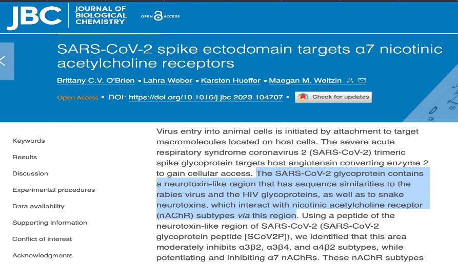

Доктор Брайан Ардис (Dr. Bryan Ardis), округ Колумбия
Перевод
(Первоисточник PDF здесь)
Вопреки тому, что было опубликовано о Sars-Cov-2 и COVID, настоящая цель ядовитого шипа
белка COVID - это НЕ рецепторы ACE2. Ядовитый шиповидный белок Sars-Cov-2 и всех его вариантов, а также всех других вирусов в мире нацелен на никотиновые ацетилхолиновые рецепторы, в частности, альфа-7 рецепторы nACHR (alpha-7 nACHR receptors).
Это НЕ новая информация, она просто была намеренно похоронена и скрыта с апреля 2020 года, когда французские исследователи определили, что шиповидные белки Sars-Cov-2 идентичны двум белкам змеиного яда, которые являются нейротоксинами, называемыми токсином кобры (белок яда королевской кобры) и бунгаротоксином (белок нейротоксичного яда змеи крайта), оба из которых нацелены на никотиновые ацетилхолиновые рецепторы в нашей центральной нервной системе. Определив, что ядовитые шиповидные белки нацелены на никотиновые рецепторы, это наконец объяснило ученым, почему курильщики были менее затронуты COVID, чем любая другая демографическая группа.
Они объясняют, что польза никотина в организме курильщиков заключается в защите рецепторов никотина от связывания спайк-белков яда с nACHR рецепторами.⚠ В статье они даже умоляют все правительства мира финансировать исследования по использованию никотина для профилактики COVID во всем мире... никто не слушал, что шокирует.
Удивительно, но в статье они признают, почему ивермектин был так успешен во всем мире, и это потому, что ивермектин также связывается с рецепторами альфа-7 nACHR.⚠
Ссылка на статью французского исследования дана ниже, со скриншотом ядовитого шипообразного белка, опубликованного в статье:
https://comptes - rendus.academie - sciences.fr/biologies/item/CRBIOL_2020__343_1_33_0/#r7
* Примечание: скриншот ниже, «Sars-Cov-2 S» — это шиповидный белок (спайк-белок)
Мотивы нейротоксинов. Выравнивание аминокислотной последовательности мотивов, обнаруженных в токсинах змей родов Ophiophagus (королевская кобра) и Bungarus (крайтовая змея) , в G из трех штаммов RABV и в S из SARS-CoV-2.
В мае 2023 года NIH профинансировал и опубликовал исследование, подтверждающее, что ядовитые шиповидные белки Sars-Cov-2 нацелены на рецепторы альфа-7 nACHR (а не рецепторы ACE2). Вот название и ссылка:
«Эктодомен шипа SARS-COV-2 нацелен на никотиновые ацетилхолиновые рецепторы a7»
https://www.jbc.org/article/S0021-9258(23)01735-0/fulltext

В 2015 году в Гарварде провели исследование на животных, чтобы определить зависимость от никотина. К своему удивлению, они не смогли вызвать зависимость ни у одного животного от чистого никотина в воде. Поэтому исследователи запросили документы о табаке
компании и из документов они узнали, что производители табачных изделий в 70-х годах поняли, что никто не будет покупать «легкие сигареты», поэтому им пришлось придумать, как производить табачные изделия, вызывающие привыкание. В 2015 году Гарвард узнал, что табачные гиганты сделали, чтобы сделать табачные изделия и НИКОТИН
вызывающими привыкание. Они добавили химикат под названием «пиразин», который вызывает сильную зависимость, и они делают это с тех пор. Никотин не является вызывающим привыкание веществом в табачных изделиях, химикаты пиразина делают никотин
вызывающим привыкание. Пиразины — это всего лишь один из 600 одобренных химикатов, которые FDA разрешает производителям табака добавлять в свою продукцию в США. Интересно, что это за вещества? Вот ссылка на исследование Гарварда и статьи, в которых обсуждаются их выводы о том, что НИКОТИН не вызывает привыкания.
Название исследования Гарварда:
«Исследование пиразинов в сигаретах и того, как добавки могут быть использованы для усиления табачной зависимости»
https://tobaccocontrol.bmj.com/content/25/4/444
Статьи в СМИ, освещающие это Гарвардское исследование, и ссылки:
«Никотин сам по себе не приводит к зависимости: добавки, обнаруженные как в легких сигаретах, так и в электронных сигаретах, вредны»
https://www.medicaldaily.com/nicotine-alone-does-not-lead-
наркомания-добавки-найдены-как-легкие-сигареты-так и-e-337470
•
В январе 2023 года Марко Лейтцке опубликовал исследование, в котором подчеркивается:
4 клинических случая пациентов с «долгим COVID» (не проходившим долгое время), и их чудесные выздоровление всего за 6 дней при местном использовании никотиновых пластырей 7 мг !
Ссылка на исследование:
https://bioelecmed.biomedcentral.com/articles/10.1186/s42234 - 023 00104 - 7
Заключение исследования, цитирую: «При лечении нескольких человек, страдающих от пост-COVID-19 синдрома с применением никотинового пластыря, мы стали свидетелями улучшения от немедленных и существенных до полной ремиссии в течение нескольких дней .
Профилактика — купите никотиновый пластырь 14 мг, разрежьте на 6 равных частей и наклеивайте одну такую часть пластыря ежедневно на грудную клетку или плечо.
(Именно это доктор Ардис делает ежедневно с ноября 2022 года, чтобы предотвратить все будущие воздействия вирусов/ядов или их разновидностей).
Пациенты, страдающие от последствий «долгого COVID», должны приобрести и носить один никотиновый пластырь 7 мг ежедневно в течение как минимум 1 недели, а затем продолжать до тех пор, пока симптомы не исчезнут.
(Затем доктор Ардис рекомендует следовать профилактическому протоколу, описанному выше.)
Пострадавшие от вакцины C19 — следуйте протоколу для пациентов, страдающих «долгим COVID», указанному выше.
Профилактика — купите никотиновую жевательную резинку дозировкой 2 мг и жуйте по 1 штуке не менее 10 минут, два раза в день.
(Это то, что жена доктора Ардиса Джейн делает ежедневно, чтобы предотвратить все будущие воздействия вирусов/ядов или их разновидностей).
Пациенты, страдающие «долгим COVID» — приобретите жевательную резинку с 2 мг никотина (НЕ покупайте жевательную резинку с 4 мг никотина) и жуйте одну таблетку жевательной резинки с 2 мг в течение 10 минут 4 раза в день в течение 2 недель или до исчезновения симптомов, а затем продолжайте до тех пор, пока симптомы не прекратятся.
(Затем доктор Ардис рекомендует следовать профилактическому протоколу, описанному выше.)
Пострадавшие от вакцины C19 — следуйте протоколу для пациентов, страдающих «долгим COVID», указанному выше.
ВАЖНОЕ ПРИМЕЧАНИЕ:
КАЖДАЯ КЛЕТКА ВАШЕГО ТЕЛА ИМЕЕТ НИКОТИНОВЫЕ РЕЦЕПТОРЫ, ВКЛЮЧАЯ КИШЕЧНИК, НЕМНОГИЕ ЛЮДИ, ПРИ ЖЕВАНИИ И ГЛОТАНИИ НИКОТИНОВОЙ ЖВАЧКИ, ПОЛУЧАЮТ ТОШНОТУ И РВОТУ ИЛИ ЖИДКИЙ СТУЛ. ЭТО ПОТОМУ ЧТО ТАК МНОГО ЯДА ШИПОВИДНЫХ БЕЛКОВ ПРИКРЕПЛЯЮТСЯ К НИКОТИНОВЫМ РЕЦЕПТОРАМ, КОТОРЫЕ ВЫСТИЛАЮТ ВЕСЬ ВАШ КИШЕЧНИК, И КОГДА НИКОТИН ПРИСУТСТВУЕТ, ОГРОМНОЕ КОЛИЧЕСТВО ЯДА ВЫБРАСЫВАЕТСЯ ИЗ СЛИЗИСТОЙ ОБОЛОЧКИ КИШЕЧНИКА, И ВЫ ЧУВСТВУЕТЕ ЭТО КАК ПИЩЕВОЕ ОТРАВЛЕНИЕ.
ПОЧЕМУ? ПОТОМУ ЧТО ЗМЕИНЫЙ ЯД - ЭТО ЯД, И БОГ СОЗДАЛ ЧЕЛОВЕЧЕСКОЕ ТЕЛО ТАКИМ, ЧТОБЫ ОНО ВЫБРАСЫВАЛО ЯДЫ С РВОТОЙ И ЖИДКИМ СТУЛОМ, ВСЕ ЯДЫ.
ЕСЛИ ЭТО ПРОИЗОЙДЕТ, ПЕРЕЙДИТЕ НА НИКОТИНОВЫЕ ПЛАСТЫРИ. НИКОТИН МИНУЕТ КИШЕЧНИК И ВСАСЫВАЕТСЯ В ВАШ КРОВОТОК ЧЕРЕЗ ВАШУ КОЖУ МЕНЕЕ ЧЕМ ЗА 30 СЕКУНД. ВОТ ПОЧЕМУ Я ИСПОЛЬЗУЮ ПЛАСТЫРИ КАЖДЫЙ ДЕНЬ.
У БОЛЬШИНСТВА ЛЮДЕЙ НЕТ РЕАКЦИИ НА ЖВАЧКУ ИЛИ НИКОТИН ПЕРОРАЛЬНО, НО У НЕКОТОРЫХ ОНА ЕСТЬ, И ЭТО СМЯГЧАЕТСЯ ПРИ ИСПОЛЬЗОВАНИИ МЕСТНОГО НИКОТИНОВОГО ПЛАСТЫРЯ.
МНОГИЕ ЛЮДИ МОГУТ ПОЛУЧИТЬ ВЫГОДУ ОТ ПОКУПКИ ОРГАНИЧЕСКОГО ТАБАЧНОГО ЛИСТА ОНЛАЙН. ОТВАРИВАЙТЕ ЛИСТЬЯ И ДЕЛАЙТЕ ВАННУ ДЛЯ НОГ ПО 20-30 МИНУТ НЕСКОЛЬКО РАЗ В НЕДЕЛЮ, ЧТОБЫ ТАКИМ ОБРАЗОМ ПОЛУЧИТЬ НИКОТИН.
https://www.amazon.com/Rugby-Nicotine-PolacrilexFlavor-
Курение/dp/B006SU2NVK/ref=sr_1_2?crid=VJN5JMVT
PG7K&keywords=регби+никотин+жвачка+мята&qid=168
9101717&s=hpc&sprefix=регби+никотин+жвачка%2Chpc %2C111&sr=1-2
https://lucy.co
Как использовать никотин
Статьи, в которых упоминаются продукты, содержащие никотин
https://www.haypp.com/uk/nicopedia/6-foods-you-may-not-have-realised-contain-nicotine/
Статья о том, как употребление продуктов с никотином помогает бороться с болезнью Паркинсона
https://www.medicalnewstoday.com/articles/260354